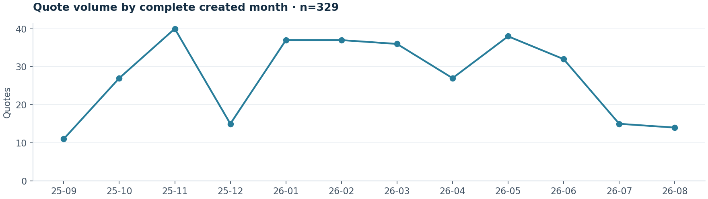
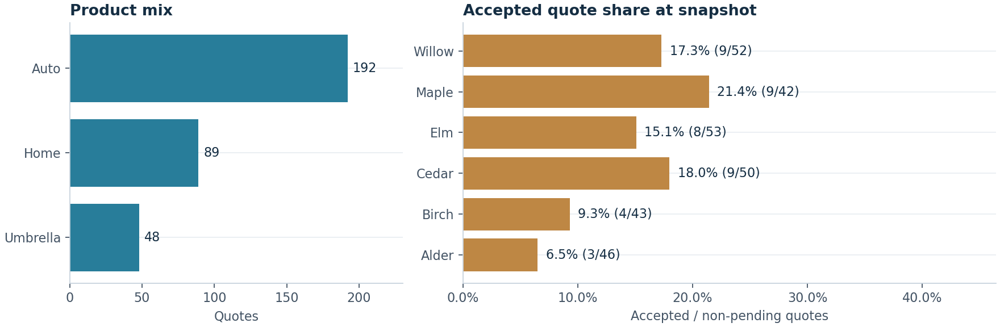

ENZO FERRARINI / INSURANCE ANALYTICS
Manager overview
2025-09-01 to 2026-08-31 · Snapshot 2026-08-31
Scroll charts sideways for readable labels; exact values are in the expandable data tables.
329
Quotes
Distinct quote records
90
Quoted prospects
3.66 quotes per quoted prospect
14.7%
Accepted quote share
42 accepted / 286 non-pending
46.7%
Accepted prospect share
42 / 90 quoted prospects
Use this view to frame questions about quoting and follow-up. Acceptance shares use different units: a quote can be one of several options for the same prospect.


Pending quotes are excluded only from accepted quote share. Newer cohorts have had less time to decide. Carrier differences are generated variation, not performance evidence.
Accessible data: monthly counts and carrier denominators
| created_month | quote_count | previous_month_quotes | month_over_month_change |
|---|---|---|---|
| 2025-09 | 11 | — | — |
| 2025-10 | 27 | 11.00 | 1.45 |
| 2025-11 | 40 | 27.00 | 0.48 |
| 2025-12 | 15 | 40.00 | -0.62 |
| 2026-01 | 37 | 15.00 | 1.47 |
| 2026-02 | 37 | 37.00 | 0.00 |
| 2026-03 | 36 | 37.00 | -0.03 |
| 2026-04 | 27 | 36.00 | -0.25 |
| 2026-05 | 38 | 27.00 | 0.41 |
| 2026-06 | 32 | 38.00 | -0.16 |
| 2026-07 | 15 | 32.00 | -0.53 |
| 2026-08 | 14 | 15.00 | -0.07 |
| carrier_id | carrier | quote_count | accepted_quotes | non_pending_quotes | accepted_quote_share |
|---|---|---|---|---|---|
| 1 | Fictional Alder | 53 | 3 | 46 | 0.07 |
| 2 | Fictional Birch | 52 | 4 | 43 | 0.09 |
| 3 | Fictional Cedar | 62 | 9 | 50 | 0.18 |
| 4 | Fictional Elm | 58 | 8 | 53 | 0.15 |
| 5 | Fictional Maple | 47 | 9 | 42 | 0.21 |
| 6 | Fictional Willow | 57 | 9 | 52 | 0.17 |
Next investigation: collect timestamped follow-up events and observed policy outcomes before recommending a real operational change.